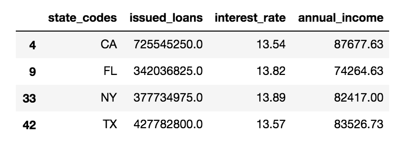

Summary of noteworthy findings from the EDA
Please notice, that additional details on how the cleaned data was processed, including the EDA can be found here.
As described on the initial homepage, we are focusing on the dataset from 2016 and 2017. That dataset has about 90 predictors and 334,000 observations. The ratio of “Fully paid” to “Charged off” loans in the original set is about 3:1 which makes it somewhat imbalanced. We will consider that by balancing the data for the modelling process.
For the purposes of EDA, however, we kept the original dataset. We ran a correlation analysis to see which predictors correlate and we also ran several modelling algorithms (LassoCV, Decision Tree and Random Forest) that would help us find the most significant predictors in the dataset. Below are some examples of the most important predictors that had a higher impact on the target variable loan status:
- Interest Rate
- Sub Grade (a rating that Lending Club assigned to the loan)
- Average Current Balance (of all accounts)
- FiCo score (the borrower’s credit score)
- Dti (the debt to income ratio)
- Installment (the monthly payment owed by the borrower if the loan originates)
- Employment length (in years)
- Term (36 or 60 months)
- Revolving line utilization rate (the amount of credit the borrower is using relative to all available revolving credit)
- Loan amount
- Annual income
- Home ownership
Loan Amount
When we look at the distribution of the loan amount, it shows a preference for requesting values in 5k steps, such as 5k, 10k, 15k, 20k, 35k etc. Most loans are relatively smaller amounts: 50% of all loans are below $ 12,500 and 75% below $ 20,000

Loan risk (i.e. grades/ratings and interest rates)
When looking at the loan risk (expressed as sub grades), the grades go from A1 (highest/best) to G5 (lowest/worst). We can see a trend that looks like smaller loan amounts are usually rated as a lower risk and larger loans are usually rated riskier, which makes sense.

As far as the default by grade goes, it seems that grades A and B are fairly “safe” because the majority of loans in these classes are paid off; however, anything lower than a D (i.e. riskier grade) has a risk of 63-77% of defaulting.

Interest rates are higher for lower sub grades, which also makes sense, since the interest rate reflects a measurement of risk and so does the sub grade.

This also seems to be confirmed when looking at the rate of defaulted loans by interest rate. The higher the interest rate, the more likely that a loan is going to default (see below).

Loans by States
We can also show that almost 40% of all loans were made in only the top four States: CA, TX, NY and FL.

When looking at the average annual incomes, three of these States (CA, NY and TX) are in the top 10, but FL is on rank 27. This leaves the question as to why there have been so many loans in FL?

Since 40% of all loans were made in the top four States, we would naturally expect those to have the highest absolute numbers of defaults too. However, we can also look at which States have a higher default rate than the national average of 23.64%. This shows that especially some States in the South like AR, LA, MS and AL are at the top of the list.

Loan Purpose
Another interesting aspect we looked at was the defaulted loans by loan purpose and/or by loan grade. We know that our "base charged off rate", meaning the % of all charged off loans over all loans made in 2016-2017 is 23.64%. This means all loan purposes that show a higher percentage in the table below, are probably at a higher risk than average to default. In this case that is dept_collection, medical, moving, renewable_energy, small_business and other.

Intermediate conclusions from the EDA and literature review
The EDA and literature review indicated that we need to take some additional steps to pre-process the data and construct useful models.
Firstly, the classes are imbalanced, with the majority (around three-quarters) of loans being fully paid. Having imbalanced data may give a false impression of the performance of the model, and can negatively affect the performance of some learning algorithms such as logistic regression. We will therefore balance the training data by resampling to achieve a 50:50 split between the target classes.
Secondly, the cost of a false positive is high in this particular example - i.e. the cost of a defaut is much greater (where the investor can potentially lose all the invested money), compared to the potential upside of making a successful loan (where the investor will gain the interest rate on repayments). This means that accuracy is not the best metric and we want to focus on limiting the number of false positives as much as possible. Therefore, we will use a selection of metrics other than accuracy. These include: precision, recall, F1_score, and AUC (area under the ROC curve). These are explained further when developing the functions in the modelling approach.
Lastly we plan to explore various metrics of fairness to test whether the outcomes of the algorithms lead to different results for protected vs unprotected classes. These metrics include equal opportunity, predictive equality and statistical parity. Again, these are explained in more detail in the modelling approach. We have chosen to implement these metrics as direct calculations.
However, there are limitations in such metrics. For instance, they should be used in allocation of risk assessment problems with well-defined protected attributes, in which one would like to have some sort of statistical or mathematical notion of sameness. We will need to ensure that we do not create biases where there are none, or just by assuming different groups are reflected differently in the dataset.
Baseline model
As mentioned above, the dataset will be rebalanced to contain balanced classes. For the most simple baseline model, if a model simply assumes that all loans are fully paid, it will achieve 50% precision. This is our initial baseline.